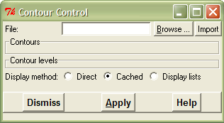
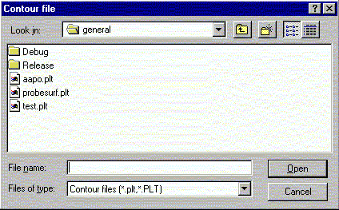
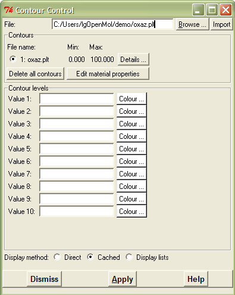
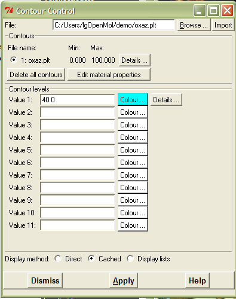
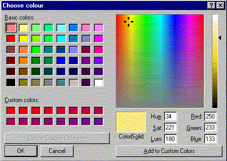
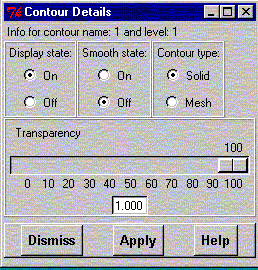

**************************************************************************
Contour Manager Widget
Leif Laaksonen CSC 1996
**************************************************************************
This is the main contour display widget. Through this widget you can control
the contour files, isosurface values, colours, surface smoothing and many
more things. The data is defined as scalar values in a grid box.
Before you can display any isosurface contour you have to read in
the molecular system for which the grid data has been generated
(this is usually a coordinate data file).
The steps to do:
- Read the atom coordinate information (through import coordinates) for
your molecular system.
- Open the contour manager widget (if it is not open alredy).
- The contour data files are usually *.plt files (you can of course
use your own file name extension). Click on the "Browse" button
to open the file browser to see the *.plt files.
Double click on the file (or a single click and then
press the "Open" button) to select the file.
- Press the "Import file" button to read in the grid data to gOpenMol.

File browser widget used to select a plot (*.plt) file:

After importing the plot file:

- Write the isocontour value into the input field (starting upwards).
- Click on the "Colour(number)" button to choose a colour for the surface
- If you want to map (colour) the surface according to the grid values
of an other grid (*.plt) file press the "Mapping" button.
- The contour surface renderer can be used in three different modes:
- direct mode where the polygons are drawn directly on the screen,
- cached mode where the polygons are saved into memory drawn from
memory,
- display lists are used for the display of the polygons.
- the last displayed contour polygon
data information is saved in an array and can be retrieved with the
show command in direct and cached
modes.
- Press the "Apply" button"!
After defining the individual contour calues it is possible to change the surface details:

- If you want the surface to be smoothed press the "Details" button.
- If you want to make the surface transparent press the "Details" button.
- If you want to switch between mesh and solid type of surfaces press
the "Details" button.
- If you want to turn a particular surface off press the "Details" button
You can change either the isocontour value, colour, smoothing by
pressing the "Details" button for the chosen isocontour value.
You can also manipulate your mesh data files with the "contman" program.
With the "contman" program you can add or sustract two contour files
(A = B + C) or you can make a smooth transition from one contour file
to an other using A = w * B + (1 - w) C, where w is a mixing constant
( 0.0 ... 1.0). To have a look at the input to the "contman"
program write "contman -h".
Widget to select the colour for a surface:

Widget to change detailed contour parameters:
- Click to set the display state, smoothing state,
contour type (mesh/solid).
- Change the transparency of the surface.
- Remember to press the "Apply" button to apply the selection.

Line command: see contour command
**************************************************************************
LUL/1996
**************************************************************************